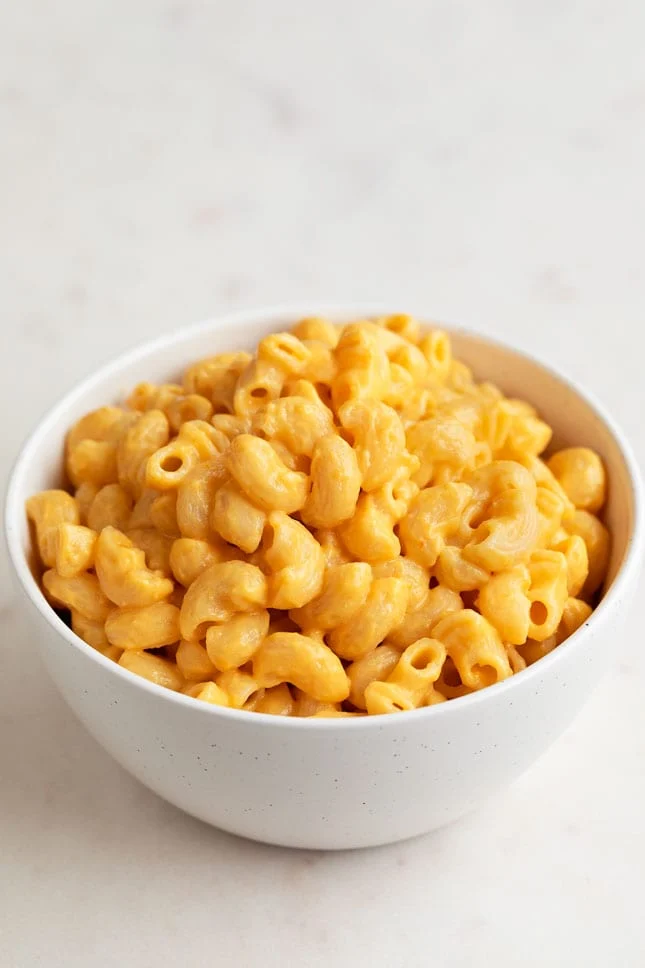

Macaroni and Cheese

Description
- Bring pot of water to a boil on stove
- Add noodles. Stir and let boil for 8-10 minutes
- Strain noodles. Leave in strainer.
- Set stove temperature to low
- Add 1 tbsp vegan butter and 1/2 cup plant milk to pot
- Add cheese mix powder
- Whisk until saucy
- Add noodles back to pot
- Stir until delicious
- Devour